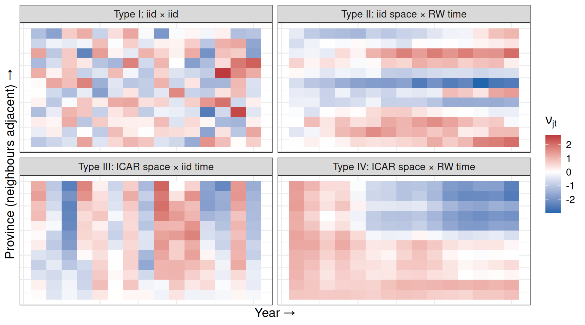
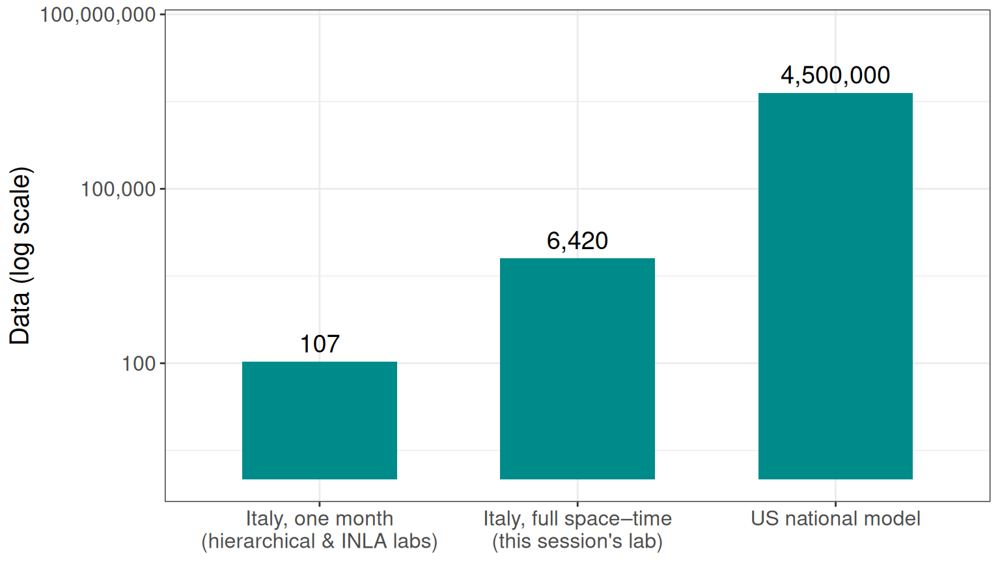
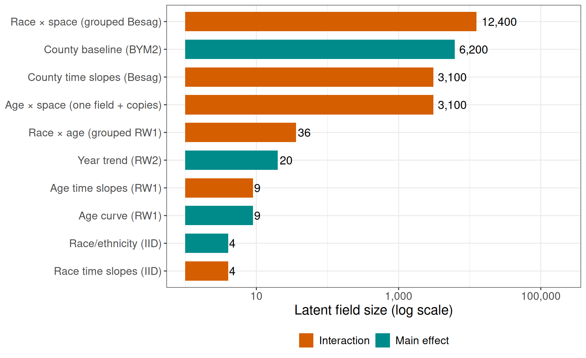
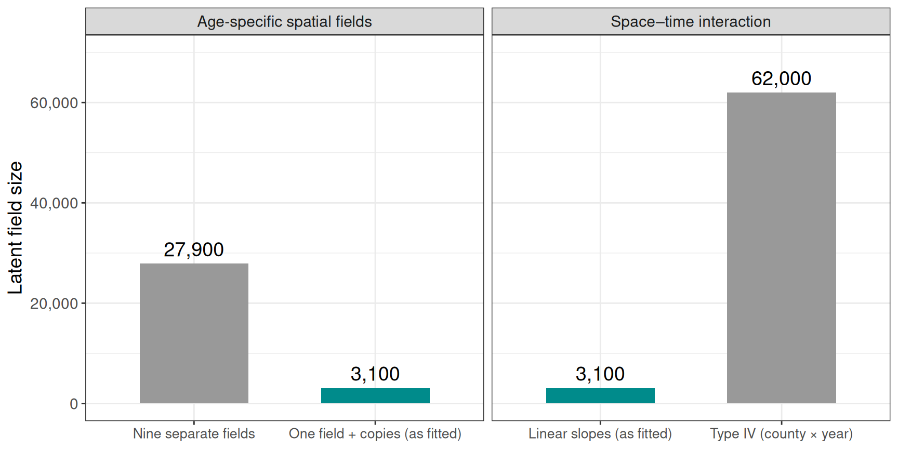
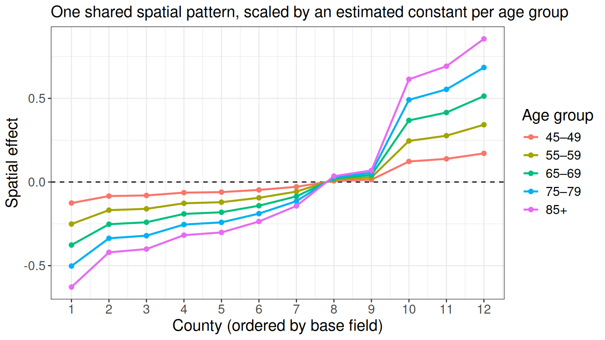
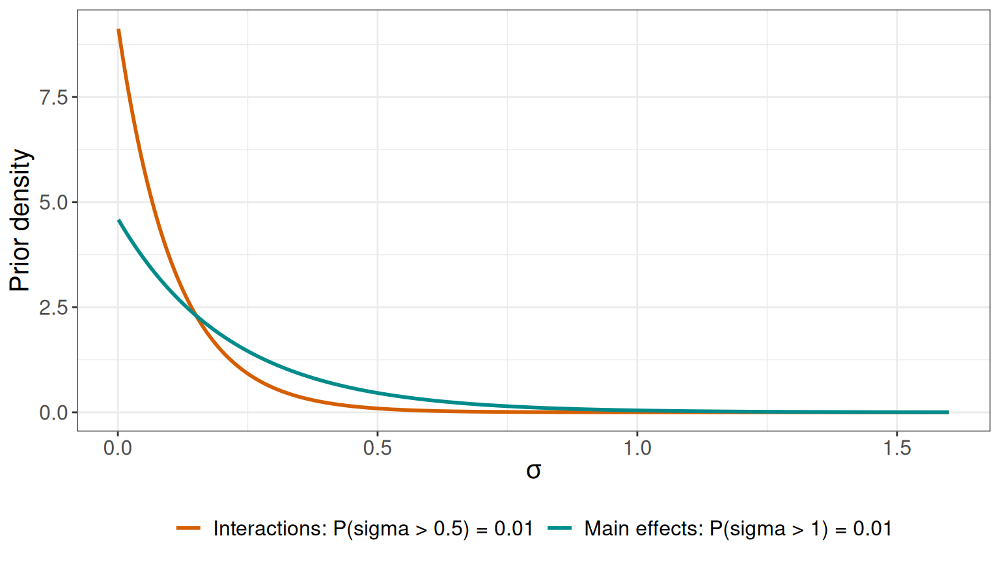
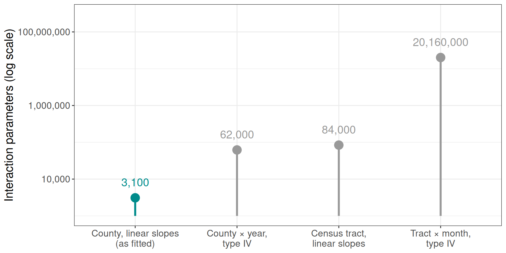
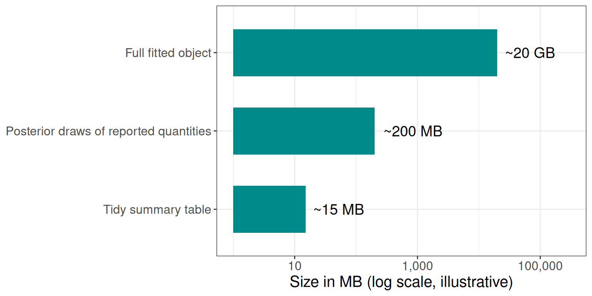

Scaling Bayesian models
Some considerations for larger model fits
Aug 7, 2026
So far…
- Models fitted with MCMC in
NIMBLE:- True sampling of posterior
- Flexible, but can become slow with larger models
- Models fitted with
R-INLA:- Deterministic (but usually very accurate) approximation
- Seconds rather than minutes
- Both fitted on a Posit cloud, for 107 Italian provinces in previous sessions in this workshop
This session
- In this session we look at what changes when models and data get much bigger:
- Optimizing models
- Running on more powerful computing systems
- Exploring model results interactively
This session
- Building up an annual space–time model for Italy from the earlier sessions
- An example research model at full national scale in the US, and how each component builds on this workshop series
- Specification choices that keep a large model tractable
INLAsettings that can make large fits faster- Scaling even further: what to do when that is not enough
- Outputs and exploration at scale
- High-performance computing
Building up a space–time model
From the earlier labs to a space–time model
Before looking at anything at national scale, let’s build a full space–time model on data we already know: the Italian provinces.
- Where the
INLAlab left off: a BYM2 model for the provinces of Italy, for September 2018 only — 107 spatial units, onef()term, fitted in seconds - Where we go now: all provinces, all years — an annual space–time model, built up one
f()term at a time - This is also the model you will build yourselves in this session’s lab
Building the Italy model: the data
Step one is to stop throwing data away — but also to be deliberate about which dimensions we keep. Here we aggregate the months away and model annual counts per province:
Building the Italy model: the data
R-INLA needs a separate index column for every f() term, even when several terms index the same thing:
data <- data |>
mutate(
id_space = as.integer(factor(SIGLA)), # BYM2 baseline
id_year = as.integer(factor(year)), # RW2 trend
id_space_int = id_space, # interaction: space index
id_year_int = id_year, # interaction: time index
id_cell = row_number(), # interaction: one per cell
id_year_c = id_year - mean(unique(id_year)) # centred year, for slopes
)- The adjacency graph
gis rebuilt from the shapefile withpoly2nb()andnb2INLA() id_space_intandid_year_intare duplicates
Building the Italy model: in symbols
\[ \begin{split} y_{jt} &\sim \text{Pois}(\mu_{jt}) \\ \log(\mu_{jt}) &= \log(E_{jt}) + \alpha + b_j + \gamma_t + \color{red}{\nu_{jt}} \end{split} \]
- \(b_j\): BYM2 spatial baseline — 107 provinces (spatial session)
- \(\gamma_t\): smooth trend across years, RW2 (non-linear session)
- \({\nu_{jt}}\): the space–time interaction — how each province departs from the common trend
Building the Italy model: baseline
The starting point is the BYM2 model from the INLA lab, unchanged except that it now runs over every province–year:
With only this term, every year gets the same map — the model cannot describe change over time at all.
Building the Italy model: the common trend
Add the global temporal term: a smooth trend across years, shared by every province.
- RW2 gives a smooth, non-linear national trend — the smoothing idea from the non-linear regression session, as a random walk rather than a spline basis
constr = TRUE(sum-to-zero) keeps the trend identifiable alongside the intercept
Building the Italy model: the common trend
Add the global temporal term: a smooth trend across years, shared by every province.
Now every province rises and falls in exactly the same way: the maps for different years are identical up to a single common shift.
Space-time interaction
The separable model says: province \(j\) has its own level, year \(t\) has its own level, and that is all.
- Real data are rarely so obliging — provinces diverge, some improve faster than others, some years hit some regions harder
- Anything the separable model cannot express ends up in the residuals
Space-time interaction
The fix is the interaction term \(\nu_{jt}\), and in the spatiotemporal session we saw four ways to structure it (Knorr-Held, 2000):
\[ \nu_{jt}: \quad \theta_j \otimes \gamma_t \ \ | \ \ \theta_j \otimes \xi_t \ \ | \ \ \phi_j \otimes \gamma_t \ \ | \ \ \phi_j \otimes \xi_t \]
Each combines an unstructured (\(\theta\), \(\gamma\)) or structured (\(\phi\) spatial, \(\xi\) temporal) effect on each side.
The four types (I, II, III, IV)

Type I: unstructured × unstructured
\[ \nu_{jt} = \theta_j \otimes \gamma_t, \qquad \nu_{jt} \overset{iid}{\sim} N(0, \sigma^2_\nu) \]
Departures have no pattern at all — pure province–year noise, unrelated to neighbouring provinces or adjacent years.
hyper_int <- list(prec = list(prior = "pc.prec", param = c(0.5, 0.01)))
formula_I <- deaths ~ 1 +
f(id_space, model = "bym2", graph = g, scale.model = TRUE,
hyper = hyper_bym2) +
f(id_year, model = "rw2", constr = TRUE, scale.model = TRUE,
hyper = hyper_pc) +
f(id_cell, model = "iid", hyper = hyper_int) # <- the interaction- The cheapest structure to fit: no graph, no ordering, one precision
- Useful as a catch-all for overdispersion beyond the main effects, but it borrows no strength — a sparse cell is shrunk towards zero, not towards its neighbours
Latent values: \(N_p \times N_t = 107 \times N_t\). Hyperparameters: 1.
Type II: unstructured space × structured time
\[ \nu_{jt} = \theta_j \otimes \xi_t, \qquad \boldsymbol{\nu}_{j\cdot} \sim \text{RW1 independently for each } j \]
Each province gets its own smooth trend, but the trends are unrelated across the map: Milan’s departure evolves smoothly year to year, and tells you nothing about Bergamo’s.
formula_II <- deaths ~ 1 +
f(id_space, model = "bym2", graph = g, scale.model = TRUE,
hyper = hyper_bym2) +
f(id_year, model = "rw2", constr = TRUE, scale.model = TRUE,
hyper = hyper_pc) +
f(id_space_int, model = "iid", hyper = hyper_int, # <- the interaction
group = id_year_int,
control.group = list(model = "rw1", scale.model = TRUE))- The
group =Kronecker construction: IID over provinces, RW1 across the grouped years - This is the fully flexible version of the linear slopes we come to shortly
Latent values: \(N_p \times N_t\). Hyperparameters: 1.
Type III: structured space × unstructured time
\[ \nu_{jt} = \phi_j \otimes \gamma_t, \qquad \boldsymbol{\nu}_{\cdot t} \sim \text{ICAR}(W) \text{ independently for each } t \]
Each year gets its own spatial pattern — smooth across the map within a year, but unrelated to the year before or after. Natural for events that strike different regions in different years.
formula_III <- deaths ~ 1 +
f(id_space, model = "bym2", graph = g, scale.model = TRUE,
hyper = hyper_bym2) +
f(id_year, model = "rw2", constr = TRUE, scale.model = TRUE,
hyper = hyper_pc) +
f(id_space_int, model = "besag", graph = g, # <- the interaction
scale.model = TRUE, hyper = hyper_int,
group = id_year_int,
control.group = list(model = "iid"))- The same construction as Type II with the roles swapped: Besag over provinces, IID across the grouped years
Latent values: \(N_p \times N_t\). Hyperparameters: 1.
Type IV: structured × structured
\[ \nu_{jt} = \phi_j \otimes \xi_t, \qquad \boldsymbol{\nu} \sim \text{ICAR}(W) \otimes \text{RW1} \]
Departures evolve smoothly in both dimensions at once: a province’s excess resembles its neighbours’ and its own value last year. The most realistic structure, and the hardest to identify.
formula_IV <- deaths ~ 1 +
f(id_space, model = "bym2", graph = g, scale.model = TRUE,
hyper = hyper_bym2) +
f(id_year, model = "rw2", constr = TRUE, scale.model = TRUE,
hyper = hyper_pc) +
f(id_space_int, model = "besag", graph = g, # <- the interaction
scale.model = TRUE, hyper = hyper_int,
group = id_year_int,
control.group = list(model = "rw1", scale.model = TRUE))- Type IV needs extra sum-to-zero constraints beyond
INLA’s defaults to be identifiable alongside the main effects (viaextraconstr) — worth knowing before using it in earnest
Latent values: \(N_p \times N_t\). Hyperparameters: 1 (plus constraint bookkeeping).
Comparing the four
| Type | Space | Time | Borrows strength across | Typical use |
|---|---|---|---|---|
| I | IID | IID | everything | catch-all |
| II | IID | RW | years, within province | province-specific trends |
| III | ICAR | IID | provinces, within year | year-specific maps |
| IV | ICAR | RW | both | genuinely evolving spatial patterns |
- All four cost the same \(N_p \times N_t\) latent values and one hyperparameter — the difference is what they smooth, not how large they are
- In the South African cervical cancer example from the spatiotemporal session, that was 9 provinces × a handful of years, and a full type IV was comfortably fittable
- For Italy, \(107 \times N_t\) is still potentially fittable — which is why the lab uses this data to demonstrate what happens next
Summary of additional model terms
- An annual space–time model for Italy: three
f()terms, a handful of hyperparameters, and it fits on a laptop in minutes - Every term came from an earlier session: BYM2 (spatial), RW2 smoothing (non-linear regression), partial pooling (hierarchical), PC priors (INLA)
- We will revisit during the lab
Considerations for a model at even larger scale
A United States model (real example)
Now the entire United States at county level:
| Dimension | Size |
|---|---|
| Counties | ~3,100 |
| Years | ~20 |
| Age groups | 9 |
| Race/ethnicity groups | 4+ |
| Sexes | 2 |
That is around ~4.5 million rows, a spatial graph with thousands of nodes, and a dozen f() terms in R-INLA, each with its own hyperparameters.
Model size progression
How far this is from where the workshop started:

Why this is a challenge to fit
- Memory: the sparse precision matrix of the latent field, its Cholesky factor, and every posterior marginal all sit in RAM. Large spatiotemporal
INLAmodels can need hundreds of GB. - Time: hours rather than seconds, and a sensitivity analysis means refitting several times over.
- Typical laptop: ~16–64 GB of memory.
The model, term by term
The US model: data and indices
The same pattern as the Italy model — one index column per f() term, plus the weight variable for the slopes:
| Index | Used by |
|---|---|
id_year, id_county, id_age, id_race |
the four main effects |
id_county2, id_race2, id_age2 |
linear time-trend interactions |
id_county3, id_race3 |
race-specific spatial fields |
id_county_as1 … id_county_as9 |
age-specific spatial fields |
id_age4, id_race4 |
race-specific age curves |
id_year_c |
centred year — the weight for every linear slope |
The US model: priors
Three tiers, by the role each term plays:
# Weakly informative: RW, IID and group terms
hyper_lg <- list(prec = list(prior = "loggamma", param = c(1, 0.001)))
# Main effect — genuine large between-county variation expected
hyper_bym2 <- list(prec = list(prior = "pc.prec", param = c(1, 0.01)),
phi = list(prior = "pc", param = c(0.5, 2/3)))
# Interactions — deviations from main effects, so should be smaller
hyper_besag <- list(prec = list(prior = "pc.prec", param = c(0.5, 0.01)))We come back to why the tiering matters for scaling later in the session.
Step 1: main effects
model_formula <- deaths ~ 1 +
# Global temporal trend (RW2)
f(id_year, model = "rw2", constr = TRUE, scale.model = TRUE,
hyper = hyper_lg) +
# County baseline: spatial + unstructured (BYM2)
f(id_county, model = "bym2", graph = g, scale.model = TRUE,
hyper = hyper_bym2) +
# Global age curve (RW1)
f(id_age, model = "rw1", constr = TRUE, scale.model = TRUE,
hyper = hyper_lg) +
# Race/ethnicity main effect (IID)
f(id_race, model = "iid", hyper = hyper_lg)Fitted with family = "nbinomial" and E = dat$population.
Step 1: main effects
- The BYM2 county term is exactly the model from the spatial session — the Swiss childhood cancer example — at ~3,100 areas instead of 26 cantons
- The RW2 year term is the smooth trend from the non-linear regression session, as a random walk rather than a spline basis
constr = TRUE(sum-to-zero) keeps each term identifiable alongside the interceptscale.model = TRUEmakes the precisions comparable across structured terms — and makes the PC priors mean what we think they mean
As in Italy, this is a separable model: every county follows the same national trend, every race group the same age curve.
Step 2: linear time-trend interactions
model_formula <- deaths ~ 1 +
# ... four main effects as above ... +
# ST_lin: county-specific linear trends, spatially smoothed (Besag)
f(id_county2, id_year_c, model = "besag", graph = g,
scale.model = TRUE, hyper = hyper_besag) +
# RT_lin: race-specific linear trends (IID across race)
f(id_race2, id_year_c, model = "iid", hyper = hyper_lg) +
# AT_lin: age-specific linear trends (RW1, smoothed across age)
f(id_age2, id_year_c, model = "rw1", constr = TRUE,
scale.model = TRUE, hyper = hyper_lg)All three take id_year_c as a weight — the same linear-slope device we just used for Italy, applied on three different dimensions.
Step 2: linear time-trend interactions
f(id_county2, id_year_c, model = "besag")is precisely the Italy interaction, at 3,100 countiesf(id_race2, id_year_c, model = "iid")is its unstructured cousin — the type II analogue, restricted to a linef(id_age2, id_year_c, model = "rw1")smooths the slopes across age groups: adjacent ages should be trending similarly
Step 3: race-specific spatial fields
Four maps, one per race/ethnicity group — but sharing one spatial precision:
- The
group =Kronecker construction from the Italy build — Besag over counties, IID between race groups - One precision estimated for all four maps, rather than four estimated separately
Step 4: age-specific spatial fields
Nine maps, one per age group — but only one is estimated:
model_formula <- deaths ~ 1 +
# ... everything above ... +
# AS: base field is age group 9 (85+), the highest death count
f(id_county_as9, model = "besag", graph = g, scale.model = TRUE,
hyper = hyper_besag) +
f(id_county_as1, copy = "id_county_as9", fixed = FALSE) + # 45-49
f(id_county_as2, copy = "id_county_as9", fixed = FALSE) + # 50-54
f(id_county_as3, copy = "id_county_as9", fixed = FALSE) + # 55-59
# ... as4 through as8 ...copy =re-uses the base field, scaled by an estimated constant (fixed = FALSE)- The assumption: one shared spatial shape, different amplitudes by age
Step 5: race-specific age curves
- The same
group =device as step 3, on a different pair of dimensions: a smooth age curve per race group, with the curves tied together by an estimated between-group variance - Partial pooling from the hierarchical session — applied to entire curves rather than single parameters
Where each term comes from
| Formula term | Where we covered it before |
|---|---|
f(id_race, model = "iid") — partial pooling |
Hierarchical modelling |
f(id_year, model = "rw2"), f(id_age, "rw1") |
Non-linear regression; INLA |
f(id_county, model = "bym2", graph = g) |
Spatial modelling |
f(id_county2, id_year_c, model = "besag") |
Spatial modelling; Italy build |
hyper = list(prec = list(prior = "pc.prec", ...)) |
INLA |
The whole model (real example)
model_formula <- deaths ~ 1 +
# ── Main effects ────────────────────────────────────────────────
f(id_year, model = "rw2", constr = TRUE, scale.model = TRUE, hyper = hyper_lg) +
f(id_county, model = "bym2", graph = g, scale.model = TRUE, hyper = hyper_bym2) +
f(id_age, model = "rw1", constr = TRUE, scale.model = TRUE, hyper = hyper_lg) +
f(id_race, model = "iid", hyper = hyper_lg) +
# ── Linear time-trend interactions (weights = centred year) ─────
f(id_county2, id_year_c, model = "besag", graph = g,
scale.model = TRUE, hyper = hyper_besag) +
f(id_race2, id_year_c, model = "iid", hyper = hyper_lg) +
f(id_age2, id_year_c, model = "rw1", constr = TRUE,
scale.model = TRUE, hyper = hyper_lg) +
# ── Race-specific spatial fields (group =) ──────────────────────
f(id_county3, model = "besag", graph = g, scale.model = TRUE, hyper = hyper_besag,
group = id_race3, control.group = list(model = "iid", hyper = hyper_lg)) +
# ── Age-specific spatial fields (copy =) ────────────────────────
f(id_county_as9, model = "besag", graph = g, scale.model = TRUE, hyper = hyper_besag) +
f(id_county_as1, copy = "id_county_as9", fixed = FALSE) + # 45-49
f(id_county_as2, copy = "id_county_as9", fixed = FALSE) + # 50-54
f(id_county_as3, copy = "id_county_as9", fixed = FALSE) + # 55-59
f(id_county_as4, copy = "id_county_as9", fixed = FALSE) + # 60-64
f(id_county_as5, copy = "id_county_as9", fixed = FALSE) + # 65-69
f(id_county_as6, copy = "id_county_as9", fixed = FALSE) + # 70-74
f(id_county_as7, copy = "id_county_as9", fixed = FALSE) + # 75-79
f(id_county_as8, copy = "id_county_as9", fixed = FALSE) + # 80-84
# ── Race-specific age curves (group =) ──────────────────────────
f(id_age4, model = "rw1", constr = TRUE, scale.model = TRUE, hyper = hyper_lg,
group = id_race4, control.group = list(model = "iid", hyper = hyper_lg))How many parameters is that?

Around 25,000 latent parameters in total — and the interaction terms dominate.
Parameter compromises
The totals only stay at 25,000 because of how the interactions are specified:

The copy feature
Age-specific spatial patterns — nine maps, one per age group:
- One spatial field is estimated properly, anchored to the age group with the most data
- The other eight age groups get a scaled copy: the same map, multiplied by an estimated constant (
fixed = FALSE) - Use with caution
The copy feature
| Specification | Latent field | Hyperparameters |
|---|---|---|
| Nine independent Besag fields | 9 × 3,100 | 9 precisions |
| One field + eight copies | 3,100 | 1 precision + 8 scaling constants |
- The assumption: the shape of the age-specific spatial pattern is shared, and only its amplitude varies by age
- Use with caution
The copy feature

This is the same idea as the spline-by-constant DLNM from the advanced models session: one shape, different amplitudes.
The copy feature
- Where the shared-shape assumption fails, it fails visibly: plot the base field against crude age-specific SMRs before committing to it
group =andcopy =are the two main waysR-INLAlets you share structure across strata instead of re-estimating it- Both trade a modelling assumption for a large reduction in cost — and both borrow strength for the sparse strata
Priors as part of scaling
The big model uses PC priors (INLA session) in deliberate tiers:
# Main effect: county baseline (BYM2)
# genuine large between-county variation expected
hyper_bym2 <- list(prec = list(prior = "pc.prec", param = c(1, 0.01)),
phi = list(prior = "pc", param = c(0.5, 2/3)))
# Interaction terms (Besag slopes, race-spatial fields)
# deviations from main effects, so should be smaller
hyper_besag <- list(prec = list(prior = "pc.prec", param = c(0.5, 0.01)))- \(P(\sigma > 1) = 0.01\) for the main effect; \(P(\sigma > 0.5) = 0.01\) for the interactions
- Read exactly as in the INLA session — only now the choice of \(U\) differs by the role of the term
Priors as part of scaling

- PC priors shrink towards the simpler base model (\(\sigma = 0\)), so interaction terms the data do not support collapse towards zero rather than soaking up noise
- With a dozen variance components this shrinkage is doing real work: it is what stops a richly parameterised model from overfitting — and a well-shrunk model is also better behaved numerically
Making INLA run faster
Approximation settings
INLA lets you trade accuracy against cost, via control.inla.
Approximation strategy for the latent field:
strategy= |
Accuracy | Cost |
|---|---|---|
"gaussian" |
roughest | cheapest |
"simplified.laplace" |
default | moderate |
"laplace" |
best | most expensive |
Approximation settings
Integration over the hyperparameters:
int.strategy= |
What it does |
|---|---|
"eb" |
empirical Bayes: plug in the mode, no integration |
"auto" / "grid" |
integrate over hyperparameter uncertainty |
The two-stage rough/full workflow
Stage 1 (rough): locate the hyperparameter mode as cheaply as possible.
Stage 2 (full): warm-start from the rough mode, with the accurate settings and the outputs you need.
Why this works
- The expensive part of a large
INLAfit is the numerical optimisation over the hyperparameters: each candidate value of \(\boldsymbol{\theta}\) requires factorising a large sparse matrix - The location of the mode barely depends on which approximation strategy is used
- So the mode can be found cheaply, and the expensive settings used for a single pass from there
Only compute what you need
Every quantity requested in an inla() call costs time and memory, and at scale those costs add up.
control.predictor = list(compute = FALSE)unless you need fitted values from this particular fitdic,waic,cpo: only in the fits where you will actually use themconfig = TRUE(needed for posterior sampling) only in the final fitkeep = FALSEso the working files are not retained
Threads and solvers
num.threadsininla()controls parallelism within a fit; useful, but with diminishing returns, and more threads mean more memory in use at once- The PARDISO sparse solver can speed up the factorisations considerably on large models — see
inla.pardiso()for setup on your system - Recent versions of
R-INLAalso include a reworked, lower-memory computational core — worth keeping the package up to date if you are fitting large models
Scaling even further
What happens if the model grows again
Each of these is a real request that comes up in practice:
| Change | What it multiplies |
|---|---|
| Annual → monthly time | time points ×12; interaction terms ×12 |
| County → census tract | graph much larger |
| Adding a stratifier (e.g. education) | rows ×levels; possibly new f() terms |
| Linear → non-linear space–time interaction | interaction parameters ×(time points) |
What happens if the model grows again
Just the space–time interaction term, under different choices:

The options, roughly in order
- Restrict the interaction structure: linear slopes,
group =,copy =— as in the model we just walked through - Stratify into independent models: Smaller models, run in parallel, and simpler to debug than one enormous joint model
- Aggregate a dimension you do not need: if the question is about counties and years, do not carry months
- Reduce outputs: marginals only for the quantities you will report
- Only then: bigger hardware
The options, roughly in order
A note on stratifying (option 2):
- Splitting into independent models has a statistical cost — no borrowing of strength across the strata you split on
- So split on the dimensions where pooling was never intended (sex, cause definition), not the ones where it matters if you can help it (age, race, space)
- The bonus: independent fits can run simultaneously, which is what the job arrays at the end of this session are for
Outputs at scale
What to save
A full fitted object from a national-scale model can run to tens of GB.
Save instead:
- Tidy summary tables: one row per county × year × group, with the posterior median and 95% credible interval
- Posterior samples of the quantities you report, via
inla.posterior.sample()(this is whatconfig = TRUEis for), so that derived quantities carry proper uncertainty - Hyperparameter summaries and model metadata: the formula, priors, date, and software versions used
What to save

High-performance computing
High-performance computing, in brief
Once the model is as lean as it can be, some fits genuinely need hundreds of GB of memory — and that means a high-performance computing (HPC) cluster.
- You connect to a login node, and submit jobs to a scheduler (usually SLURM), which runs them on large compute nodes
- A job is just a shell script with a resource request at the top, running the same R script you developed locally:
High-performance computing, in brief
- The
--arrayline runs the four stratified models simultaneously — the payoff for stratifying into independent fits - Request resources honestly: too little and the job is killed; far too much and you wait much longer in the queue
- A sensible approach: run a scaled-down version first, check what it actually used (
seff <jobid>), then request somewhat above that
Reproducibility on a cluster
- The cluster runs a different Linux from your laptop, and
INLAandsfdepend on system libraries - A container (Apptainer on most clusters) solves this: a single file holding the operating system, R, and every package at fixed versions
- The same container file gives the same results on the cluster now and on any machine years later — archive it alongside the paper
Getting access to serious computing
Worth investigating early in a project, not when the first fit fails:
- Your institution’s HPC cluster: most universities run one; access is often free or cheap for researchers, sometimes with priority or extra storage available to purchase. Start with your research computing group
- National allocations: in the US, ACCESS (formerly XSEDE) awards free compute time on national systems through a lightweight application; many other countries have equivalents
Getting access to serious computing
- Cloud computing: AWS, GCP and Azure rent high-memory machines by the hour — expensive for sustained use, but reasonable for occasional very large fits, and no queue
- Budget compute into grants: cluster allocations, cloud credits, or a share of a departmental high-memory node are all legitimate, and increasingly expected, direct costs
For the models in this session, the single most useful specification to ask about is high-memory nodes (512 GB–1 TB) — for large INLA fits, memory matters much more than core count.
Wrapping up
The approach, end to end
- Specify for scale: restricted interactions, shared structure via
group =andcopy =, tiered PC priors, as few hyperparameters as the science allows - Develop small, locally: subset the data,
strategy = "gaussian", iterate quickly - Stage the full fit: rough then full, warm-started, computing only what is needed
- Stratify into independent fits where pooling was never intended, and run them in parallel
- Save summaries and posterior samples, date-stamped, rather than whole fitted objects
- Explore interactively; report the slices that matter
- Move to HPC only for the fits that genuinely need it — and know how to get access before you do
Getting ready for the lab
The lab for this session
This lab scales the Italian mortality data up from a single month to the full annual space–time dataset.
During this lab session, we will:
- Build an annual space–time model up term by term — BYM2 baseline, RW2 trend, then the interaction — comparing the Knorr-Held types against Besag linear slopes;
- Compare a fit with everything computed against a lean fit, and time the rough/full two-stage workflow;
- Turn the model into an
Rscriptandsbatchpair, with a job array for the prior sensitivity analysis;
Questions?